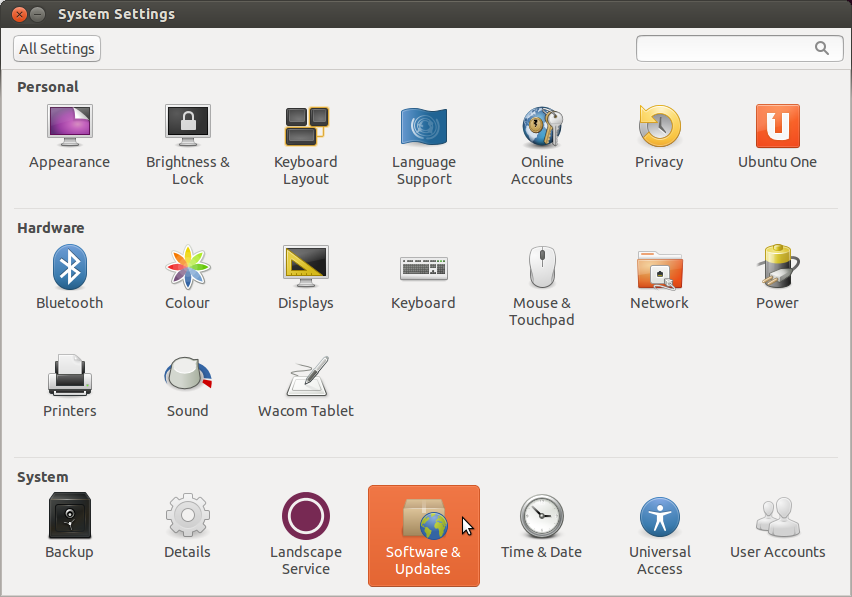
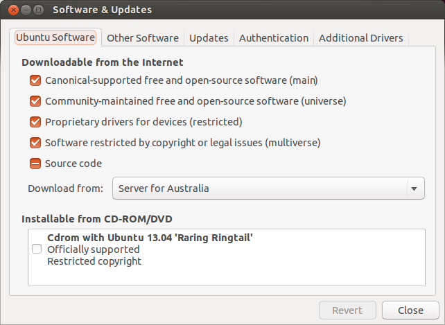
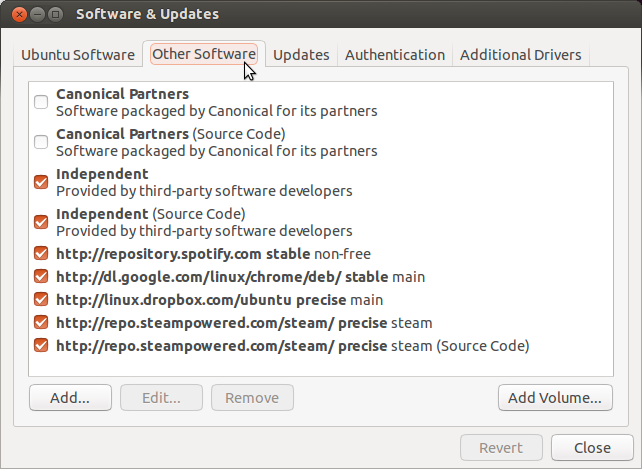

Installing on Ubuntu
This page describes the process of installing SeeC on Ubuntu using SeeC's Personal Package Archive (PPA). SeeC's PPA allows us to provide SeeC to you using Ubuntu's packaging system, which in turn makes it easy for you to update or uninstall SeeC. The screenshots were taken on a system using Ubuntu 14.04 (Trusty Tahr), but the process should work on any newer version of Ubuntu. This process might work on other distributions that are based on Ubuntu. If you have trouble installing SeeC, please email me.
First we must add SeeC's Personal Package Archive to the system's software sources. This allows Ubuntu's package management system to find and download the SeeC package. Open the System Settings, then select Software & Updates:
The following window should be displayed:
Select the Other Software tab:
Click on the Add... button to add a new software source:

Enter the following APT line for SeeC's PPA:
ppa:sen-tieshar/seec
Ubuntu will ask you to enter your password to authenticate the changes:

Now we must tell the package management system to update its package information. Open a terminal and enter the following command to update from the package sources (including our newly added PPA):
sudo apt-get update

Finally we can tell the package management system to download and install SeeC's package by entering the following command:
sudo apt-get install seec

SeeC should now be installed and usable!